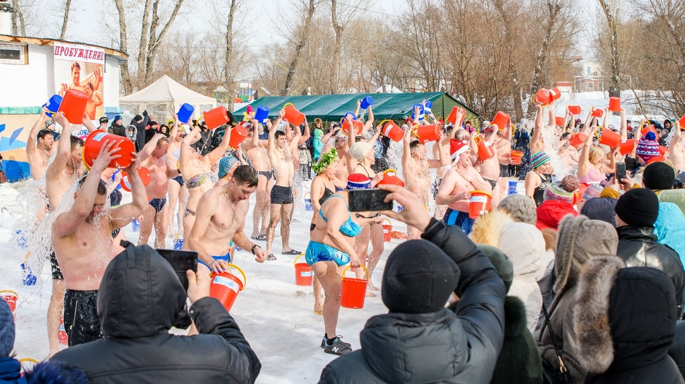

Омский спорт
Спортивный комплекс по плаванию Моржи
Главная
Моржи
Одиночки и редкие небольшие группы купающихся в холодной воде в начале зимы стали появляться на пляжах города где-то с 1955 - 1960 гг. Встречались, знакомились, искали единомышленников. И когда уже стала необходимость помещения для переодевания, для хранения инструментов для долбёжки льда, один из энтузиастов закаливания Макаров Александр Николаевич, пользующийся этим видом укрепления организма наряд с йогой, чем и был популярен в Омске, 26.11.1967 г. написал небольшую заметку в «Омскую правду».
С предложением объединиться желающим заниматься зимним плаванием, по примеру ленинградцев, в федерацию или секцию. Его поддержал на странице газеты Артемьев Б., ещё годовалый новичок в закаливании, но уже с восторженным одобрением зимнего купания. Самоустранение от такой физической процедуры считалось предосудительным. Обязательными были пробежки и гимнастика до и после купания, или игра в волейбол, или футбол, как и ежедневное утреннее обливание в домашних условиях. Так вырабатывалась методика закаливания. Так устанавливались правила поведения в коллективе и условия занятий, соблюдать которые должен был каждый, кто хотел стать членом секции.
Одной из первых традиций и самой популярной в народе стало ежегодное открытие зимнего купального сезона в начале декабря, когда уже Иртыш сковывало льдом и купель приходилось долбить по - настоящему. Чаще всего это происходило на Куйбышевском пляже, и один только взгляд на фотографию тех лет уже приводит в удивление, сколько же народу приходило смотреть на это зрелище! Музыка духового оркестра, бог и царь морей Нептун со свитой, разыгранные сценки с участием сказочных персонажей, с неизменным массовым купанием членов всех секций, делали открытие купального сезона привлекательным и запоминающимся. имний сезон заканчивался в апреле - мае, когда проходил ледоход, и мы отправлялись в Чернолучье, где ещё можно было долбить прорубь на Иртыше, и устраивали для местных «аборигенов» представление с Нептуном, перетягиванием каната, с играми и массовым купанием! А затем игра в футбол или ручной мяч. И уже в автобусе на обратной дороге отличившимся участникам вручались шуточные сувениры и призы, и все, усталые, но довольные, не умолкая, горланили популярные песни.
А обращения к руководству исполкома об улучшении наших бытовых условий продолжались. Приходили новые люди, желающие закаляться, и нас уже не устраивала теснота в помещении. Главной базой считалась Куйбышевская секция. Четыре раза она меняла свою прописку. Из прежней обжитой и обустроенной сторожки нас попросили убраться, так как началось строительство спасательного пункта для обслуживания пляжа. Мы приметили деревянный дом по ул. Съездовская, готовый к расселению и сносу, и обратились к властям, чтоб не сносили его, а отдали хоть на год, моржам, в чём нам не отказали. И за короткий срок мы восстановили освещение, заколотили глазницы окон и хоть без отопления, но пережили суровую зиму. Спартанские условия не пугали, а ещё сильнее сплачивали нас! В конце концов, мы всё же внедрились на старую спасательную Притеснения начальника спасательной станции прекратились, когда было, наконец, построено здание спасательного пункта с помещениями медпункта, милиции, общественных туалетов и камеры хранения, и нас к немалой радости, перевели в новую обитель, но только на зимнее время, когда пляж не работал.
